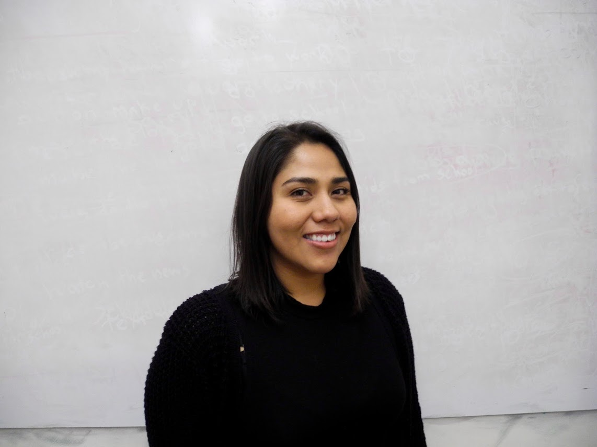

`
Stephanie Cueto
Software Engineer

Work Experience
Techtonica,
San Francisco, CA |
Software Engineer Apprentice
January 2018 - Present
- Techtonica is a six-month software engineering apprenticeship program for aspiring Bay Area women and non-binary adults.
- Built websites with Tech Stack: React, Express, MySQL, Node.js
- Meal recommendation app with in Node.js, Mongodb, and Express
- Tested with Jasmine, designed with UI/UX principles
dev/Mission, San Francisco, CA |
Program Coordinator
April 2017 - January 2018
- Managed partnerships with District 9 and 10 schools
- Provided strategic guidance to the CEO in ways to promote the company's culture of diversity and equality
- Planned the organization’s structure, developed roles and operations
- Organized prospect databases, volunteers, students
- Reviewed grant proposals, handled budgets, and supervised lab hours
- Assisted with technology literacy classes for 10-20 students
Projects
Meal Engine | Project built on Express.js
- Randomly generated recipes including snacks, appetizers, desserts, and meals.
- Personal website built on html and css. Deployed on Heroku
Salient Alert | Salient Alert Deployed on Heroku
- Salient Alert is a online community space for people to report ICE Raids or Checkpoints that are happening. Project build on the MERN Stack
Education
Careerforce, SalesForce University,
San Francisco, CA
8/17 - 10/17 | Admin Certification Training
in Salesforce
- A one year fully immersive and blended learning curriculum on training and developing the next generation of Certified Salesforce Administrators from diverse backgrounds.
San Francisco State University, San Francisco, CA
08/09 - 05/15 | Spanish B.A. and Latina/o Studies B.A
- La Raza Student Organization (LRSO): Coordinator
- ASI: Project Connect Team Member
- ASI: Project Rebound, San Francisco State University Latinos Unidos Coalition (LUC): LRSO Representative
Universidad Complutense de Madrid, Madrid, Spain
08/13 - 06/14 | Spanish Language and Literature
- California State University International Programs: Study Abroad
Skills
- Languages | Javascript (Vanilla, ES6), HTML, CSS, SQL, bash
- Frameworks/Libraries | React, jQuery, SASS, Express JS, Node.JS
- Database/Industry Tools | Mongodb, SQLite, Git, Github, Jasmine, SaaS
- Other | Salesforce Admin, Google Suite, ATOM, Slack
- Public speaking, event planning, excellent communication skills, leading teams
- International travel and work experience: Education and YMCA Spain
Languages
- Spanish: Native and bilingual proficiency
- English: Native and bilingual proficiency
Volunteer
Women Who Code SF, San Francisco, CA — Volunteer April 2018
- Assist with participant experience for CONNECT 2018 conference
Girl Develop It, San Francisco, CA — Volunteer May 2018
- TA for Spanish HTML CSS Workshop
dev/Mission, San Francisco, CA — Volunteer April 2017 - present
- Advocate for diversity and inclusion.
- Giving input as a former student, woman of color, and former staff member.
- Planning out logistics and fundraising efforts.